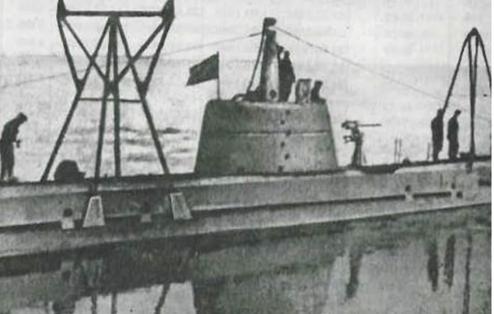
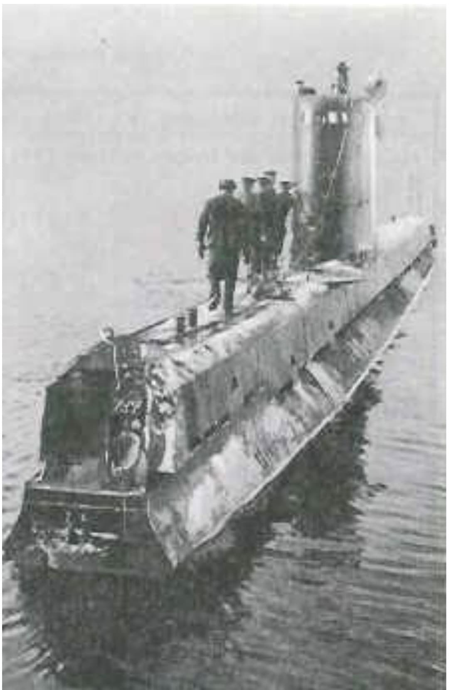
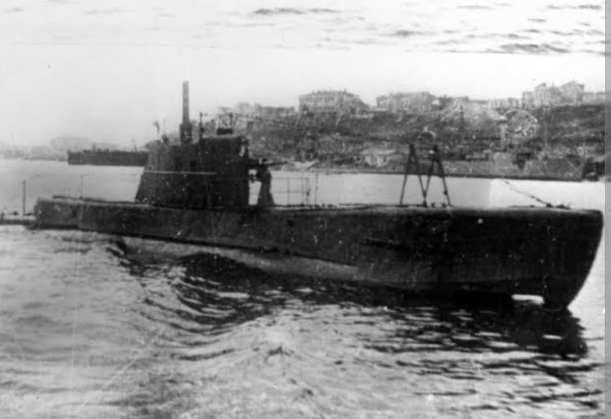

Le sous-marin de poche d'attaque côtière et démontable par voie ferrée de l'URSS

La classe Malyutka (du russe Малютка signifiant « le Petit » ou « Bébé », désignée Classe M) représente la plus petite série de sous-marins de combat de la Marine soviétique durant la Seconde Guerre mondiale.
Conçue pour répondre aux impératifs de défense côtière des frontières maritimes de l'URSS, sa particularité unique résidait dans sa capacité à être démontée et transportée par chemin de fer sur des wagons plats, permettant un transfert rapide d'une mer à une autre.
Conçue dans les années 1930 par l'ingénieur P.N. Serdyuk, la classe Malyutka devait pallier l'absence de voies maritimes sûres entre les différentes flottes soviétiques (Baltique, Mer Noire, Arctique, Pacifique).
Construits à plus de 150 exemplaires à travers plusieurs séries évolutives (Séries VI, VI-bis, XII et XV), ces sous-marins légers ont vu leur structure s'allonger et leur automatisation s'améliorer pour compenser l'extrême exiguité de l'espace de vie de l'équipage.

Engagés sur tous les fronts maritimes, les *Malyutka* ont mené des opérations d'infiltration dans les fjords arctiques de la Flotte du Nord, dans le golfe de Finlande en Baltique, ainsi que le long des côtes de Crimée en mer Noire.
En raison de leur faible autonomie et de leur armement limité à deux torpilles prêtées au tir, ils agissaient en véritables guérilleros des mers, traquant les navires de cabotage et les convois de ravitaillement de l'Axe au plus près des côtes.

Les pertes furent lourdes en raison de leur vulnérabilité aux attaques anti-sous-marines et aux mines côtières. Malgré cela, plusieurs unités comme le *M-172* acquirent le titre prestigieux de la Garde soviétique pour leurs victoires en mer Barents.
Page du Musée HOP WW2 – Section Marine Soviétique